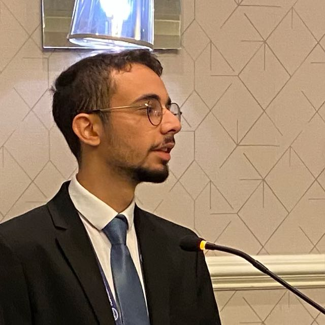

Computer Science @ UCF | AI & Computer Vision Researcher
University of Central Florida
Celik, F. I., et al. "PDAL: A GEOMETRY-PRESERVING LOSS FOR CNN-BASED LOCATION RECOGNITION" IEEE International Geoscience and Remote Sensing Symposium (IGARSS). Accepted / Expected Publication: October 2026.
Founded and led a PyTorch-based project for campus-wide location recognition at UCF.

Specializing in Deep Learning, Computer Vision, and Feature Extraction.
University of Central Florida
B.S. Computer Science
Expected May 2028
Coursework: OOP, Calculus I-III, Linear Algebra
English, Turkish